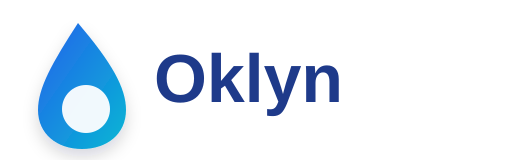
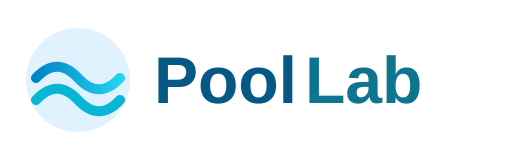

ha-oklyn
Intégration Home Assistant pour récupérer et piloter les données Oklyn depuis le cloud.
Custom integrations · Lovelace cards · Pool automation
Intégrations, cartes personnalisées et forks autour d’Oklyn, PoolLab, du dosage piscine et des équipements connectés dans Home Assistant.

Intégration Home Assistant pour récupérer et piloter les données Oklyn depuis le cloud.
Carte Lovelace pour afficher les informations Oklyn avec une interface claire et lisible.
Exploration de l’accès local aux équipements Oklyn afin de réduire la dépendance au cloud.

Carte Lovelace pour afficher les mesures PoolLab directement dans Home Assistant.

Carte Lovelace pour suivre le niveau d’un bidon de dosage liquide selon le temps de fonctionnement de la pompe.
Fork de l’intégration Worx Vision Cloud Plus avec traductions FR/DE et améliorations de capteurs.
Installation
Dépose les fichiers à la racine du dépôt HA, active GitHub Pages sur la branche main, dossier /root, et le site sera disponible sur ton URL GitHub Pages.
https://ADNPolymerase.github.io/HA/